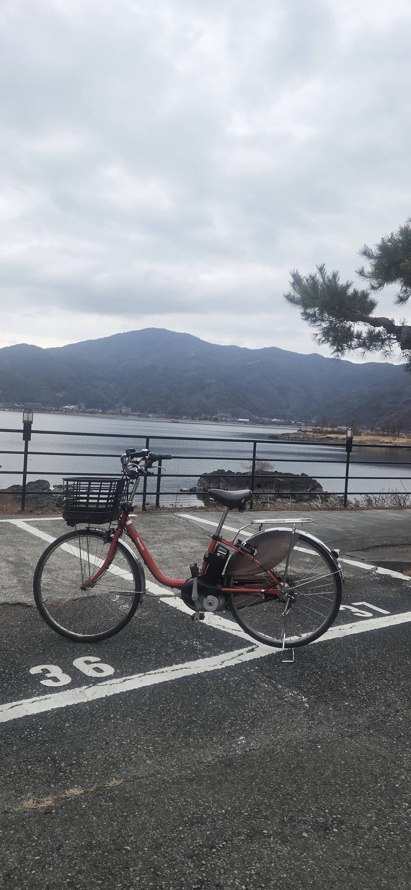
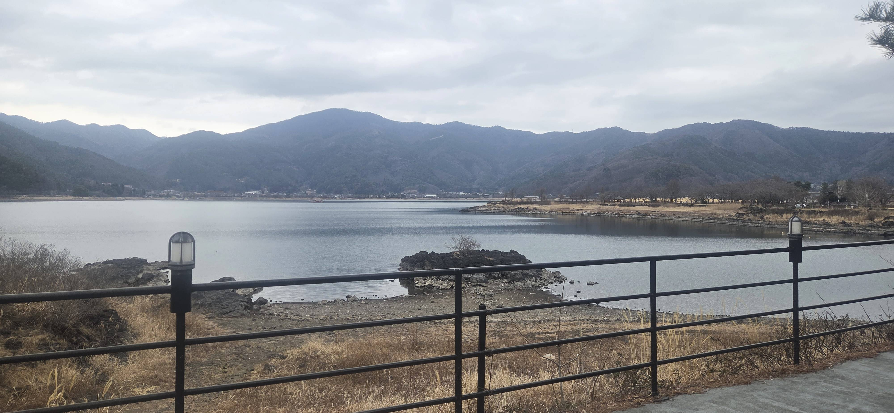
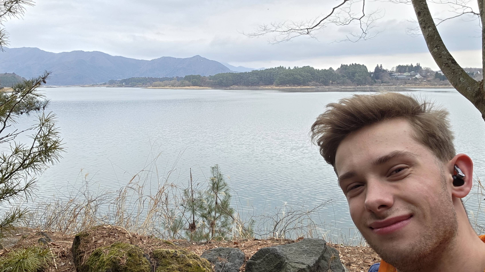
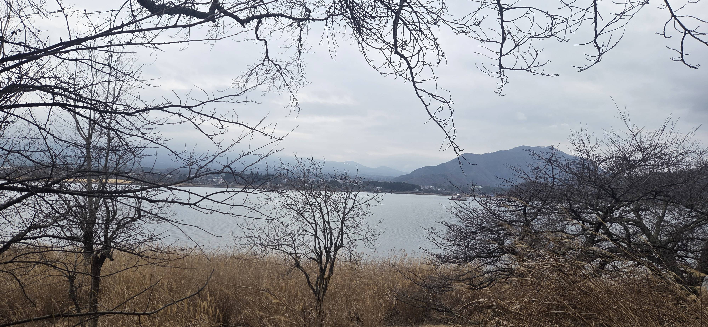
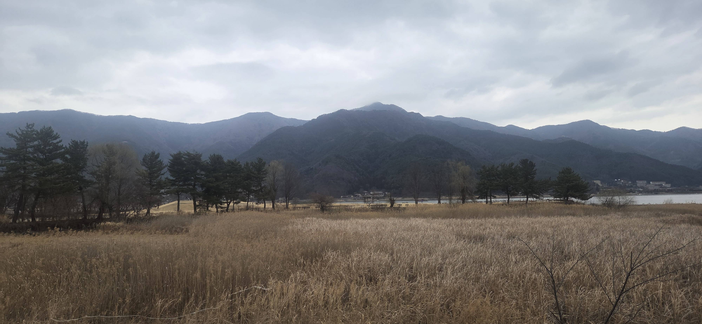
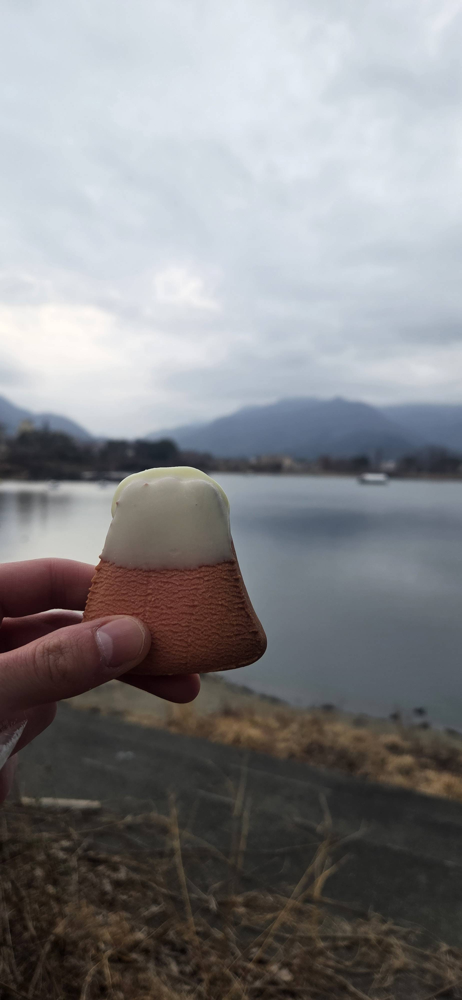
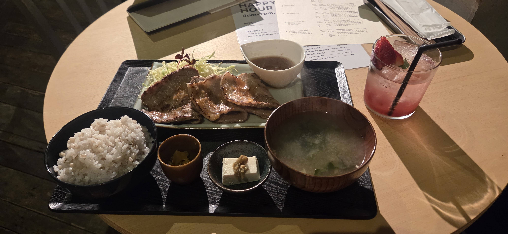
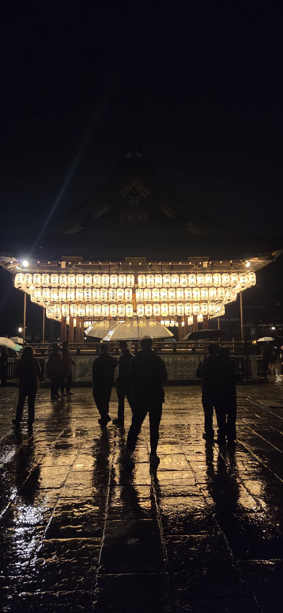
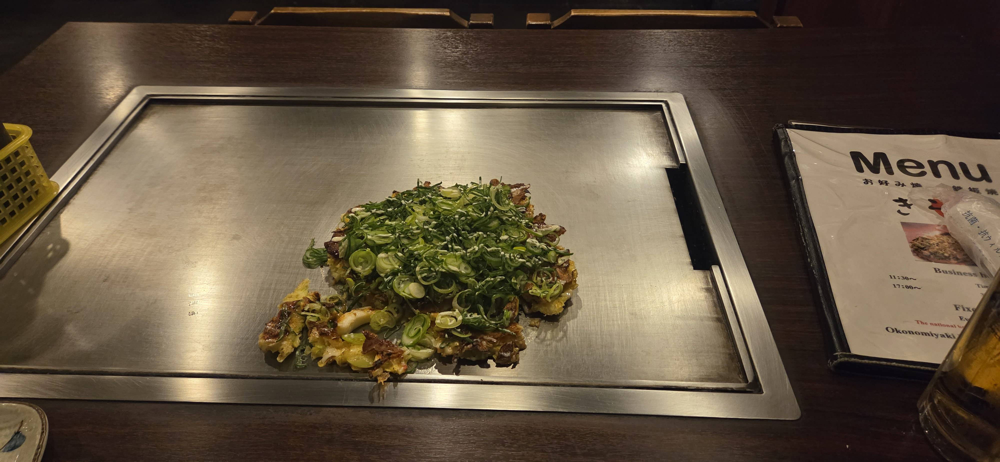

Today i woke up in Tokyo read to move on to Fuji, i had talked to a few people before hand about the best way to get there and they all seems to say that taking the bus is the best way. So i booked a coach for 11am and packed my bags and left.
The bus ride itself was simple and got me just 15min walk away from my hostel, but with my suitcase took closer to 20. It was quite cloudy, and slightly drizzly, so unfornatunely Mt Fuji was no where to be seen, the surrounding mountains were covered in clouds
aswelll, which was actually quite majestic.
Fujikawaguchiko is on the shores of a large lake, being the largest in 5 lakes that surround the north side of Mt Fuji. So i decided rent a bike and ride round the lake, and see if there would be a break in the
clouds to see Fuji (spoiler, there wasnt). I did hire an electric bike, i know, shame on me, but the bikes are so low that i was struggling to peddle anyways, even with the saddle all the way up. I set off around the lake, stoppng a few times to explore the paths that surround the Lake
and me cycling slightly faster than inticipated, decided to cycle up to the next lake in the chain, and see that one too, which added an extra 10km or so.
On the trip back, i stopped by a nature museum that was talking about how they found a fish that they thought was extinct,
and how the last known location of the fish was 600km away in another lake. So it was interesting to read about their theories and how they are preserving the fish. There was also a bat cave, but unfornunately it was clsoed at the moment. The whole round trip ended in just over 30km in about
2.5 hours. I was however after that, quite tired, so i decided to stay at the hostel for dinner. Since it seemed to have quite a nce restaurant, (plus happy hour when i sat down, so cheap drinks were a bonus.), I ended up having fried prok, miso soup and rice(obviously). It was all delicious.
I had a shower and went to bed not long after, with the dirnks being cheap i ended up sipping on them for quite a while, so it was getting late anyways. Looking at the forecast, im happy i went to fuji then, as it was only going further downhill.
The next day i woke up at around 8 am,
the plan was to go to Kyoto, and had looked at busses to reserve to Mishima, where the shinkansen makes a stop, and then bullet train to Kyoto, however this time it wasnt possible and the website didnt like my card. So i quickly got up and walked over the the station, which by this point
the light drizzle turned into heavy rain, i did have an umbrella, but was happy that i brought my new rain jacket with me. Turns out though that there were quite alot of people with the same idea as me, and the train station where the bus was was packed, and i had to get the last seat on the 3rd bus leaving
, so i had to wait around for an hour and a half in the cold (weather app said felt like -2). When the bus finally arrived and we started driving, once we got out of the valley, it was proper snow that had covered the ground, and the bus had to slow down on the motorway, it was all very scenic and all, just nut exactly
the weather i had hoped for. So no Fuji views for me and for the rest of the trip :( . The bus ride was about an hour and a half, and i had an hour in the station to grab lunch before the shinkansen i had booked arrived. The train ride itself was uneventful, and with it being so cloudy outside, the view was gray and dull.
Once i arrived in Kyoto i went straight to the hostel, which is a converted traditional house, i am staying in a 10 person room, but it was empty, so was quite weird settling in without anyone around. I then headed off for dinner, where i had okomiyaki, which is a kind of pancake with meats, that you fry on a hot plate. It was very delicious.
I then spent a couple hours writing the previous blog and then going to bed. The plan is to explore Kyoto the next day and see what this town has to offer.








